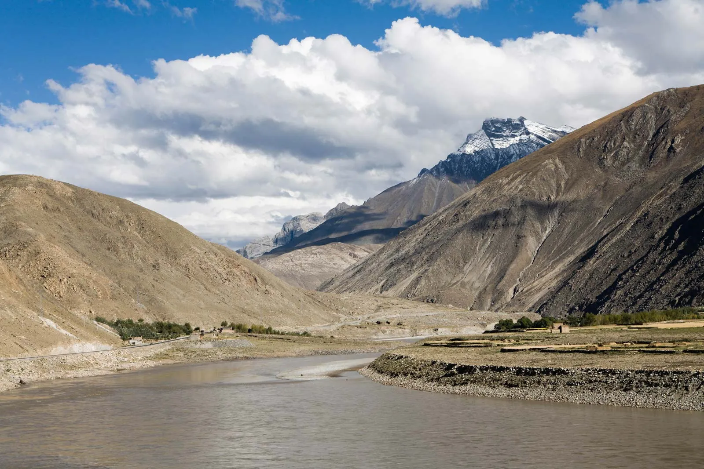
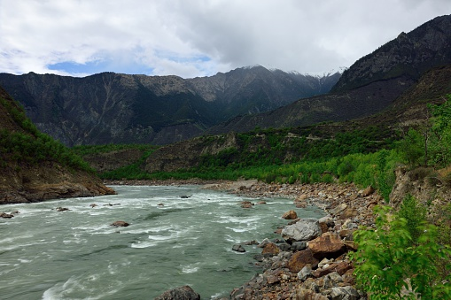

5.Brahamaputra River
The Brahmaputra (/ˌbrɑːməˈpuːtrə/) also known as the Yarlung Tsangpo in Tibet, the Siang/Dihang River in Arunachal Pradesh, Luit in Assamese, and Jamuna River in Bangladesh, is a trans-boundary river. which flows through Tibet, India, and Bangladesh. It is the 9th largest river in the world by discharge, and the 15th longest.
About 3,969 km (2,466 mi) long, the Brahmaputra is an important river for irrigation and transportation in the region. The average depth of the river is 30 m (100 ft) and its maximum depth is 135 m (440 ft) (at Sadiya). The river is prone to catastrophic flooding in the spring when the Himalayan snow melts. The average discharge of the river is about 19,800 m3/s (700,000 cu ft/s), and floods reach about 100,000 m3/s (3,500,000 cu ft/s). It is a classic example of a braided river and is highly susceptible to channel migration and avulsion. It is also one of the few rivers in the world that exhibits a tidal bore. It is navigable for most of its length.

The river drains the Himalayas east of the Indo-Nepal border, south-central portion of the Tibetan plateau above the Ganga basin, south-eastern portion of Tibet, the Patkai hills, the northern slopes of the Meghalaya hills, the Assam plains, and the northern portion of Bangladesh. The basin, especially south of Tibet, is characterized by high levels of rainfall. Kangchenjunga (8,586 m) is the only peak above 8,000 m and hence is the highest point within the Brahmaputra basin. The Brahmaputra's upper course was long unknown, and its identity with the Yarlung Tsangpo was only established by exploration in 1884–86. The river is often called the Tsangpo-Brahmaputra river.[citation needed] The lower reaches are sacred to Hindus. While most rivers on the Indian subcontinent have female names, this river has a rare male name. Brahmaputra means "son of Brahma" in Sanskrit.

The lives of many millions of Indian and Bangladeshi citizens are reliant on the Brahmaputra river.
Its delta is home to 130 million people and 600 000 people live on the riverine islands.
These people rely on the annual 'normal' flood to bring moisture and fresh sediments to the
floodplain soils,
hence providing the necessities for agricultural and marine farming.
In fact, two of the three seasonal rice varieties (aus and aman) cannot survive without the
floodwater. Furthermore,
the fish caught both on the floodplain during flood season and from the many floodplain ponds are
the main source of protein for many rural populations.